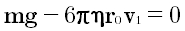
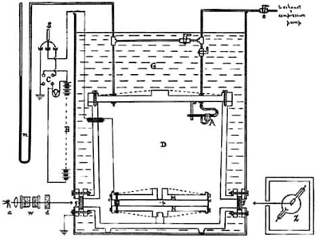
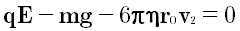
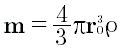
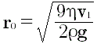

Электрон зарядын өлшеуге арналған Милликен тәжірибесіОның эксперименттік қондырғысы екі металл пластинадан жасалған, олардың арасында камерасы бар үлкен жалпақ конденсатордан тұрады. Конденсатордың төсемдеріне Милликен жоғары потенциалдар айрымын туғыза отырып, тұрақты кернеуді берді, ал төсемдер арасына тозаңдандырылған май тамшылары орналастырылды. Алдымен Милликен тамшыларының тұрақты түсу v1 жылдамдығын өлшеді, яғни тамшыларға әсер ететін mg жердің тартылыс күші ауаның кедергі күшімен теңестірілетін жылдамдық:  (1) Это измерение позволяет определить радиус капли r0. В формуле η - вязкость воздуха. На каплях возникает заряд в результате трения их о воздух, заполняющий камеру. Затем следовали измерения подъема капли при включенной батарее. Теперь добавилась сила qE, действующая на каплю зарядом q со стороны электрического поля E. Следуют измерения установившейся скорости v2. Капля движется равномерно, следовательно, силы уравновешены  (2) Из этого уравнения находится заряд. Р. Милликен повторил эти измерения многократно. Заняло это несколько лет с усовершенствием установки, показанной на рисунке. Надо было обеспечить постоянство давления и влажности воздуха. Капля заряжалась за счет фотоэффекта, вызванного подсвечиванием рентгеновским излучением (рентгеновская трубка на рисунке справа внизу). Радиус капель порядка 10-6 метра, поэтому для наблюдения за их движением используется микроскоп. Наконец, накопив достаточно экспериментальных данных для статистической обработки, Милликен вычислил величину единичного заряда и опубликовал полученные результаты. В компьютерной модели наблюдаем в микроскоп (на рисунке не показан) движение заряженной положительно капли между пластинами конденсатора. При необходимости на платины подается напряжение (на нижней плюс, на верхней минус). Расстояние между пластинами d = 5 мм. На задней стенке камеры нанесены две риски, расстояние между которыми 2 мм. Таймер позволяет измерить время движения между рисками для определения скорости капли. В модели вязкость воздуха η = 18·10-6 Па·с, плотность масла ρ = 900 кг/м3. Масса капли m  Тогда из (10) получаем для радиуса капли  То есть для определения радиуса капли достаточно измерить скорость ее падения v1. При включении напряжения напряженность поля в (2) равна E = U/d. Если сила, действующая со стороны электрического поля, больше силы тяжести mg, капля начнет движение вверх. Тогда, измерив скорость подъема v2, можно, вычитая из (2) (1), определить заряд капли q Порядок измерений
Контрольные вопросы
Если возникли вопросы, напишите. |